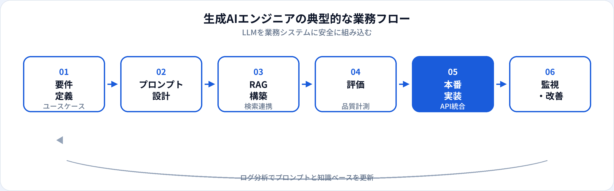

生成AIエンジニア（Generative AI Engineer）は、大規模言語モデル（LLM）を軸に、プロンプト設計・RAG・エージェント・評価・本番連携までを担うエンジニア職です。ChatGPTを業務で使うだけのポジションとは異なり、APIやフレームワークを用いて生成AIをプロダクト機能として実装する仕事が中心になります。本記事では、AIエンジニアとの違い、年収、スキル、未経験からの道のりを2026年6月時点の市場感覚で整理します。
資格・学習との関係
生成AIエンジニアに必要なのは、APIを叩くだけでなく、RAGの仕組み・ハルシネーション・評価設計・セキュリティの理解です。生成AIパスポートではLLMの特性やRAG、エージェント、倫理・ガバナンスが体系的に扱われ、実務面接では「なぜRAGを選んだか」「品質をどう測るか」が問われることが多いです。
よくある誤解は、「生成AIエンジニア＝プロンプトを書くだけ」という考え方です。PoC段階ではそれでも進みますが、本番ではレイテンシ・コスト・権限管理・ログ監査・評価自動化まで含めたソフトウェアとしての設計が求められます。
基礎概念を演習で確認する
生成AIパスポート：一問一答 TF-0234（RAG）、TF-0246（AIエージェント）、TF-0460（LLMの不得意領域）
関連記事：AIエンジニアとは · 試験トップ：生成AIパスポート対策
生成AIエンジニアとは
生成AIエンジニアは、Generative AI Engineerとして、社内文書検索、カスタマーサポートbot、コード補助、業務自動化エージェントなど、LLMを組み込んだ機能を設計・実装する専門職です。基盤モデルそのものを学習する研究職とは異なり、多くの現場では既存のAPIやオープンウェイトモデルをアプリケーション層で組み合わせる仕事が中心です。
2024年以降、RAG（検索拡張生成）とエージェント（ツール呼び出し）の需要が急増しました。同時に、幻覚（ハルシネーション）対策・個人情報の扱い・プロンプトインジェクションといったリスク管理もエンジニアの担当範囲に入りつつあります。
仕事内容
組織によって分担は異なりますが、生成AIエンジニアに期待されやすい業務は次のとおりです。

ユースケース設計
自動化できる業務と人間が残すべき判断を切り分け。成功指標（正答率・解決率・コスト）を定義する。
プロンプト設計
システムプロンプト、Few-shot例、出力フォーマット（JSON等）の設計。バージョン管理とA/B比較。
RAG構築
文書のチャンク化、埋め込み、ベクトルDB検索。検索精度と応答品質のトレードオフを調整する。
エージェント・ツール連携
Function Callingで社内API・DB・検索を呼び出す。多段推論のフロー設計と失敗時のフォールバック。
評価・ガードレール
ゴールデンデータセット、LLM-as-a-judge、毒性・PII検知。リリース前の品質ゲートを設計する。
本番運用・コスト管理
キャッシュ、モデル切替、レート制限、ログ分析。トークン単価と品質のバランスを継続改善する。
必要スキル
| 領域 | 具体例 | 重要度の目安 |
|---|---|---|
| Python / TypeScript | FastAPI、LangChain/LlamaIndex、OpenAI/Anthropic SDK | 必須 |
| LLMの基礎 | トークン、コンテキスト長、温度、ストリーミング、マルチモーダル | 必須 |
| RAG・検索 | 埋め込みモデル、ベクトルDB、リランキング、チャンク戦略 | 求人により必須級 |
| 評価設計 | ベンチマーク、回帰テスト、ヒューマン評価、コスト計測 | 中級以上で重視 |
| セキュリティ・ガバナンス | プロンプトインジェクション対策、権限分離、監査ログ | 本番担当で必須級 |
年収相場
当サイトの職種マスタでは、生成AIエンジニアの年収目安を600万〜1,400万円としています（2026年6月時点の一般的な相場感）。2023年以降の求人急増により、実務経験者はAIエンジニア平均より上振れしやすい傾向があります。一方、ツール利用のみのジュニア層との差も開きつつあります。
| 区分 | 年収の目安（日本・一般論） | 補足 |
|---|---|---|
| ジュニア | 600万〜800万円前後 | 既存API連携・社内PoC支援から入る |
| ミドル | 800万〜1,100万円前後 | RAG・評価・本番運用まで一人称で担当 |
| シニア | 1,100万〜1,400万円以上 | アーキテクチャ設計・複数プロダクト横断 |
キャリアパス
-
LLMアプリケーションスペシャリスト
特定ドメイン（法務、医療、カスタマーサポートなど）の生成AI機能を深化。
-
AIプラットフォームエンジニア
社内共通のLLMゲートウェイ、評価基盤、モデルルーティングを構築。
-
機械学習エンジニア寄り
ファインチューニング、RLHF、独自モデル運用のスキルを足す。
-
AIプロダクトリード
企画・PMと協業し、生成AI機能のロードマップを牽引。
関連職種との違い
| 職種 | 主な焦点 | 生成AIエンジニアとの違い |
|---|---|---|
| AIエンジニア | AI機能の実装全般 | より広い肩書き。生成AIエンジニアはLLM/RAG/エージェントに特化。 |
| 機械学習エンジニア | 学習パイプライン・デプロイ | 教師あり学習・特徴量設計が中心。生成AIはプロンプトと検索連携が中心のことが多い。 |
| データサイエンティスト | 分析・意思決定支援 | 統計分析・仮説検証が中心。生成AIエンジニアはプロダクト実装寄り。 |
| プロンプトエンジニア | プロンプト最適化 | 実装・評価・運用を含まない場合も。生成AIエンジニアはエンドツーエンドを担うことが多い。 |
未経験からの道のり
-
PythonとAPIの基礎（1〜2か月）
HTTP、JSON、環境変数管理。OpenAI等のSDKで簡単なチャットAPIを作る。
-
プロンプトとRAGの実践（2〜3か月）
社外公開データでRAGチャットボットを構築。生成AIパスポートで用語を整理。
-
評価とデプロイ（1〜2か月）
テストケース10〜30件、README、Dockerまたはクラウドへのデプロイ。
-
エージェント・セキュリティ（任意）
ツール呼び出し、入力サニタイズ、ログ設計をポートフォリオに盛り込む。
メリット・デメリット
| メリット | デメリット |
|---|---|
| 市場需要が高く、新規プロダクト参画の機会が多い | 技術・ベストプラクティスの変化が速く学習コストが高い |
| 短期間でデモ可能な成果物を作りやすい | PoCと本番のギャップ（品質・コスト・セキュリティ）が大きい |
| AIエンジニア・PMなどへキャリアを広げやすい | 肩書きがまだ定義揺れしておりJDの解釈が難しい求人もある |
| 生成AIパスポート等で基礎を体系的に学べる | APIコストとトークン単価の管理が日常業務になる |
よくある質問
生成AIエンジニアとAIエンジニアの違いは？
生成AIエンジニアはLLM・RAG・エージェントなど生成AI技術の設計実装に特化したポジションです。詳しくはAIエンジニアの解説も参照してください。
生成AIエンジニアに必要なスキルは？
Python、LLM APIの利用、プロンプト設計、RAGの構築、評価指標の設計、セキュリティ・ガードレールの考慮が求められます。
生成AIエンジニアの年収相場は？
経験・企業規模により幅がありますが、おおむね600万〜1,400万円前後が目安となることが多いです（2026年6月時点の一般的な相場感）。
生成AIパスポートは役に立ちますか？
LLM・RAG・倫理・セキュリティなどの基礎用語を体系的に整理する学習教材として有用です。採用の必須条件になることは少ないですが、転職時のアピール材料になります。
ファインチューニングは必須ですか？
必須ではありません。多くの業務アプリはRAGとプロンプト設計で十分な場合が多く、ファインチューニングはデータ量と運用コストの見合いがつく場合に検討されます。